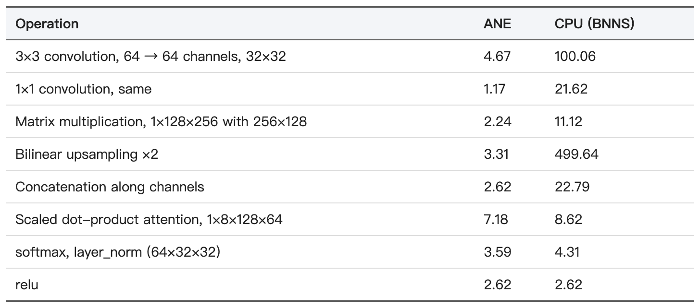
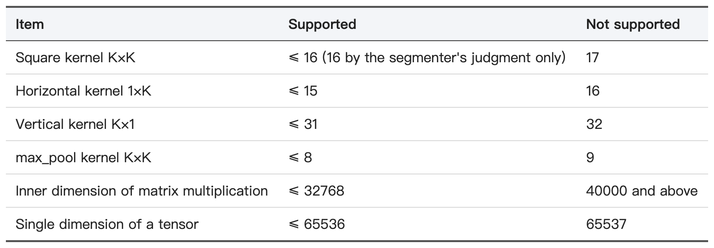
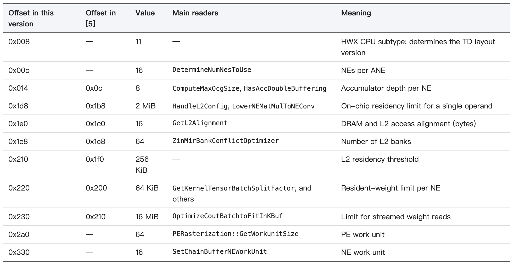
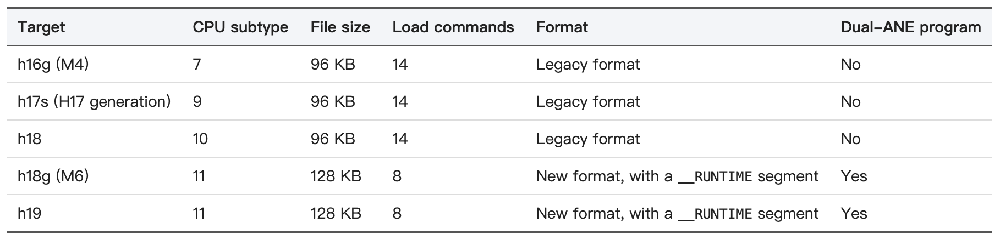
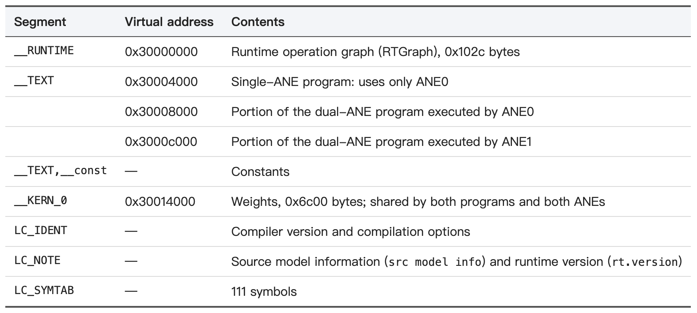
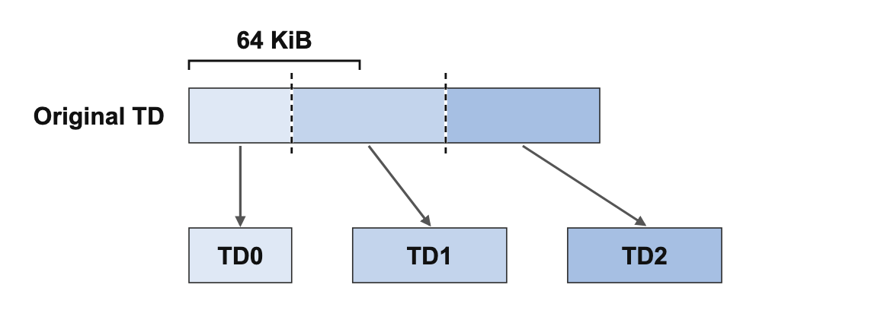

This post is chapter 5 of the report "Microarchitecture of the Apple M6 Neural Engine: An Empirical Study Based on Compiled Artifacts, Execution Traces, and Power Measurements", reproduced unchanged. Full report: web; data and tools: GitHub. Section, figure and table numbers follow the report.
5.1 Method
In this chapter, this report calls the compilation interface ANECCompile directly (anecc.m), supplying an MIL file, a target name, and compilation options, to generate compiled artifacts in HWX format and analyze them. This interface only compiles and does not access the hardware. It therefore allows the same model to be compiled into five targets, h16g (M4), h17s (H17 generation), h18, h18g (M6), and h19 (A20), and the resulting artifacts to be compared byte for byte. The name h17s is not the compilation target actually used by the M5. On a MacBook Air equipped with the M5, the compilation target read from the device properties of the ANE driver service in the IORegistry is h17, and the measured target on the A18 Pro (iPhone 16 Pro) is also h17 〔ioreg〕, whereas Bryngelson [5] labels M5 as H17s. This report selects h17s only to represent the compiler parameters of the H17 generation. Accordingly, the results for h17s in this chapter (Tables 5-4 and 5-17) and in Section 7.4.1 cannot be taken directly as the behavior of the M5, and this report has not systematically compared h17 and h17s. The compilation options are passed as a dictionary. They include several switches that control dual-ANE behavior, such as EnableForcedMaximalBondedSplit and ForceAllToANE0OnBondedProcedure, which this chapter uses to construct controlled experiments.
All models in this chapter are executed through Core ML, and no modified HWX is loaded or executed. This constraint distinguishes the method of this report from that of maderix [4]. maderix modified fields in the HWX and executed the result on the hardware, confirming the meaning of each field from changes in output and latency. This report can only observe which words of an artifact change when one property of the model is altered, and it combines these observations with the compiler's disassembly to infer the meanings of the fields. The disassembly of the compiler was obtained as follows. On the M6, we loaded the ANECompiler framework into our own process, located the unexported functions through the symbol table, exported their machine code, and disassembled it with system tools (tools: syms.c, fnbytes.c, xref.c). Consequently, the conclusions in this chapter about field meanings are labeled 〔HWX〕 or 〔compiler〕, and none has been directly verified through execution.
The baseline model used in this chapter is a three-layer, 64-channel 1×1 convolutional network. Each convolution is followed by relu as the activation function. The input tensor has shape [1, 64, 64, 64] and data type FP16 (MIL source: model.mil; generation script: mk.py). The compiled artifacts for each target are stored in data/03_compile/hwx/, and the parser is hwx_parse.py. Several specially constructed models are used in the remaining sections of this chapter; each is described where it is used.
5.2 Operator Dispatch in Core ML
When a model is loaded through Core ML, the runtime framework Espresso is responsible for assigning the complete operators. Within Espresso, the compilation and execution module E5 first uses a segmenter to choose a backend for each operation: the ANE, BNNS (the CPU neural network implementation in the Accelerate framework), or the classical CPU implementation. It then partitions the graph into several segments, and only the segments assigned to the ANE are passed to the ANE compiler. This step determines the extent to which a model actually uses the ANE, and it also determines which operations never enter the compilation path described below.
For each operation under test, we generated two models: one containing only that operation, and another in which the operation is preceded and followed by two layers of 3×3 convolution or linear layers. A separate set of boundary-scan models was also generated. Each model was loaded once in an independent cache directory, and we read the analysis file analytics.mil that the segmenter writes to the E5 cache. This file records, for each operation, the available backends, the estimated latency of each backend, and the selected backend. It agrees operation by operation with the preferred device reported by the public interface MLComputePlan, with no discrepancies. Apart from a few models that could not be parsed or were folded, analysis files were obtained for 482 models (tools: opdispatch_gen.py, opd_all.sh, opd_ana.sh, computeplan.swift; data: opdispatch/) 〔compiler〕. These experiments were performed on the M4 (Mac16,12) through Core ML, and their applicability to the M6 is discussed at the end of this section.
The segmenter's decisions can be reproduced with a very simple model. Each operation takes the estimated latency that the segmenter itself gives for each backend. A single ANE segment adds a fixed startup cost of 0.125 ms; when two adjacent segments use different backends, a switching cost of 0.125 ms is added; and when the output of the graph lies on the ANE, a further 0.125 ms is added. Under this model, the segmentation with the lowest cost is computed and then compared with the actual selection. If the BNNS and classical CPU implementations are merged into a single CPU class, and only whether each operation lies on the ANE or on the CPU is compared, 440 of the 482 models agree exactly with the actual selection, 41 are ties of equal cost, and only 1 disagrees. If the three backends are distinguished, only 261 models agree completely, the number of ties rises to 220, and the number of disagreements remains 1. The additional 179 ties all involve a choice between the two CPU backends, where the actual selection differs from the model even though the computed cost is the same (tool: opdispatch_fit.py) 〔compiler〕. Therefore, this model reproduces the dispatch of operations between the ANE and the CPU, not the choice between the two CPU backends. In addition, the model treats the operations in the analysis file, in the order of their appearance, as a single chain and computes the shortest path; for graphs with multiple inputs or branches, this is only an approximation 〔inferred〕. The startup and switching constants are recorded in the function header of the analysis file, and they are 2⁻³ ms in all models. The graph-output term has no corresponding field in the function header; it was added during fitting, and its value equals the switching cost 〔compiler, inferred〕. It follows that an ANE segment at the head or tail of the graph must save at least 0.25 ms of estimated latency relative to the CPU in order to be selected, and an ANE segment in the middle of the graph must save at least 0.375 ms 〔inferred〕. Table 5-1 lists the estimated latencies of several operations.
Table 5-1. Estimated latency of individual operations from the segmenter (M4, µs)

Compared with these estimates, the fixed cost of 0.25–0.375 ms is considerable, so small models and small segments within networks are almost always placed on the CPU. For example, a single 3×3 convolution with 64 channels at 32×32 saves only about 0.095 ms, so the layer is placed on the CPU. Four such layers save about 0.38 ms, which exceeds 0.25 ms, and only then are they placed on the ANE. When two convolution layers are separated by an operation that can execute only on the CPU, the segmenter must choose between switching twice and placing the whole graph on the CPU; for small networks, the entire graph remains on the CPU 〔compiler, inferred〕. Operations dominated by memory access differ by only about 17% in estimated cost between the two backends, and when they appear alone, they always remain in a CPU segment. Therefore, operations placed on the CPU in a model with context are not all operations that cannot execute on the ANE.
The operations that the ANE does not support fall into four main categories 〔compiler〕. The first category comprises any operation on int32 tensors, including int32 addition, multiplication, and matrix multiplication; type conversions to and from int32; argmax and argsort with int32 output; and the complete index preprocessing required by gather and scatter with dynamic indices. The second category is a subset of mathematical functions: asin, acos, tan, sinh, cosh, atanh, mod, reduce_prod, and cumsum. The third category comprises sequence and structural operations: lstm, gru, rnn, band_part, one_hot, non_zero, range_1d, random_normal, sliding_windows, crop_resize, and slices whose starting index is dynamic. The fourth category consists of size limits, as shown in Table 5-2. These operations offer no ANE option at the segmentation step and are placed on the CPU; the remaining operations are then segmented according to the cost rules described above. The segmenter does not call all 50 layer-validation functions exported by the ANE compiler directly. Espresso imports only 23 of them (convolution, matrix multiplication, pooling, softmax, reduction, gather, topk, and so on). Scaled dot-product attention, layer_norm, elementwise operations, and activation functions have no corresponding imported validation function, yet they can also be placed on the ANE, and their eligibility is determined through a different path, which this report did not trace 〔compiler〕. Common CNN and Transformer operations can be placed on the ANE. These include convolutions (one-dimensional, three-dimensional, grouped, dilated, transposed, and with dynamic weights); matrix multiplication (including batched, broadcast, and dynamic inputs); scaled dot-product attention; layer_norm; instance_norm; softmax; three variants of GELU; topk; gather with static indices; reductions other than reduce_prod; various upsampling and scaling operations; various padding modes; pixel rearrangement; transposition; and concatenation. FP32 inputs are placed on the ANE after a type conversion is inserted 〔compiler〕.
Table 5-2. Size limits of the ANE (as judged by Core ML on the M4; direct compilation for h16g and h18g agrees with these, but only the 16×16 square kernel remained unconfirmed, because its compilation exceeded 8 GB of memory)

These limits originate in the ANE compiler itself. We compiled 62 boundary and control models separately to h16g and h18g with ANECCompile. Apart from topk, the success or failure of each model is the same for both targets, and the outcomes for h16g agree with Core ML's judgment on the M4. The 16×16 square kernel was aborted on both targets because its compilation exceeded 8 GB of memory, so whether it can be compiled rests only on the segmenter's judgment. The limit of 15 for horizontal kernel width agrees with the result obtained from the configuration word in Section 7.4.1 (tool: opd_arch.sh; data: arch_h16g_h18g.tsv) 〔compiler〕. Querying the dispatch itself can also be expensive. When MLComputePlan is called for a single 16×16 convolution (64 channels, 32×32), the query triggers a full ANE compilation, which took 212–229 s, and the combined peak memory of the compiler-service processes was about 11.4 GiB. A 13×13 convolution required only 2–23 s 〔timing〕.
topk is the only exception. When a single topk is compiled directly, h16g fails the RCAS validation, whereas h18g compiles successfully; this is consistent with the observation in Section 5.7.8 that RCAS fields appear only in topk 〔compiler〕. Core ML on the M4 nevertheless still places topk in an ANE segment. In a model with four 256-channel 3×3 convolution layers before and after the topk, the segmenter places the entire graph in a single ANE segment, and topk makes the call take 6.0 ms longer than a control of the same shape (along width, k = 4) and 10.1 ms longer (along channels, k = 256). The segmenter's estimates for these operations were only 0.03 and 0.06 ms, underestimating them by a factor of about 170–200. As a result, placing the whole graph on the ANE is slower than using the CPU alone (8.00 vs. 6.23 ms, and 12.59 vs. 11.08 ms) (tools: topk_ctx.py, predict.swift; data: topk_timing.txt) 〔timing, inferred〕. These timings were obtained after a single warm-up and use the median of 20 calls. They do not follow the continuous warm-up and interrupt-count reading procedure specified in Section 3.4. Therefore, neither whether all topk operations executed on the ANE nor the source of the additional time has been directly confirmed. This report also did not measure whether topk is equally slow on the M6.
The dispatch conclusions above can be extended to the M6, but this extension rests on the compiler rather than on measurements on the M6. Espresso includes an ahead-of-time (AOT) driver that can target any E5 platform. E5 platform names are written as H16G, H18G, and so on, which correspond to the ANE compilation targets h16g and h18g; H18G is the t8152 of the M6. In a process of our own, we ran this driver in a mode that performs only segmentation and does not invoke the ANE compiler. We processed all 490 models with H16G and with H18G as targets (two nms models could not be parsed and produced no output). A dynamic library captured the per-operation estimates that the segmenter wrote to the system log (Section 3.2; tools: aotdrv.cpp, oslogtap.c, opd_aotcost.sh; data: aotfull/, aotcost/) 〔compiler〕. The per-operation estimates and segmentation results for the two targets are identical byte for byte.
As a control, we compared other platforms on 16 of these models. H13G, H17G, and H19 each have estimates for some operations that differ from those of H16G, mainly for convolution and matrix multiplication. For example, the ANE estimate for the 3×3 convolution in the table above is 6.52 µs on H13G, 4.67 µs on H16G and H18G, 8.77 µs on H17G, and 5.43 µs on H19. This shows that the cost model does distinguish platforms, but H18G reuses the parameters of H16G 〔compiler〕. Of the 6489 nonzero estimates that Core ML produced in actual compilation on the M4, 6483 appear in the output of the AOT driver targeting H16G. The six that do not appear are all estimates for input-side type conversions. This indicates that the AOT driver's results represent actual behavior 〔compiler〕.
On this basis, we infer that Core ML's dispatch on the M6 is the same as on the M4 〔compiler, inferred〕. This inference also implies the premise that the M6 runtime uses the H18G platform, which we have not directly confirmed on the M6. Because the segmenter does not know that the M6 has two engines and a higher clock, it still uses the M4 estimates to decide which operations are placed on the ANE. For M6, this threshold is therefore conservative, and some small segments that would already be cost-effective on the ANE of the M6 are still placed on the CPU 〔inferred〕.
5.3 The ANE Compiler Pipeline
In the compilation pipeline, the compiler service spawned by the daemon aned is responsible for passing the segments that the segmenter assigns to the ANE to the ANE compiler. The remaining sections of this chapter study precisely this step: into what the compiler translates the program it receives, and which additional steps and costs the dual-engine chip introduces. Experiments of this kind bypass segmentation and call the compilation interface directly (Section 5.1), so that the programs handed to the ANE compiler can be controlled.
The ANE compiler takes MIL (Model Intermediate Language), the intermediate representation of Core ML, as its input. A MIL program is a typed static single-assignment form, declared with program(1.3) and func main<ios18>, and its tensors use the NCHW layout. The compiler first uses a set of validation functions to check whether each operation can be mapped to a hardware layer of the ANE. On the M6, the compiler exports 50 such functions (_ANECValidate*Layer), covering convolution, matrix multiplication, elementwise operations, reductions, softmax, layer normalization, scaled dot-product attention (SDPA), gather, sorting, Top-K, and various shape transformations. There are 33 activation function types (ZinIrNeuronType), including several variants of relu, as well as sigmoid, tanh, gelu, swish, exp, log2, sin, cos, rsqrt, and others (list: compiler_layers_neurons_m6.txt) 〔compiler〕.
After validation, the compiler fuses adjacent operations into hardware layers (for example, fusing a convolution, a bias addition, and a relu into one layer). It legalizes and tiles the layers subject to the capacity limits in the hardware parameter table, allocates L2 and DRAM space for tensors, generates the TD sequence, and finally packs everything into an HWX file. For the h18g target, after tiling, the compiler performs a set of steps specific to dual-ANE compilation: identification of subgraphs that can be split (BondedSplitSubgraphIdentification), search for parallel branches (ZinMirFindInherentParallelism), estimation of split latency (LatencyInfo::ComputeSplitLatencyBonded), and code generation for dual-engine asynchronous groups (CodegenAsyncGroupsForBonded). The roles and costs of these steps are discussed in Sections 5.8 and 5.9 〔compiler〕.
The LC_IDENT load command of an HWX file records the compiler version and the compilation options actually used. The compiler version used in this report is zin_ane_compiler v10.26.6. For compilation to h18g, the recorded options include -t h18g, --fno-fold-scale=true, --fdram-allocator=ffreuse, and --fdram-tensor-priority=sizebyliverange. When a model is loaded through Core ML, the kernel log also shows options such as --ne-frequency=-1.000000 and --pstate-soc=-1, where −1 indicates that the compiler adopts the architecture's default value 〔HWX, kernel〕.
5.4 Compilation Targets and the Hardware Parameter Table
Each compilation target in the compiler corresponds to a target class (for example, TargetH18g). When it is constructed, the target class selects one hardware parameter table (the HAL parameter table described in Section 3.5) and one set of SoC parameters. The HAL parameter table is a static constant table for each ANE generation, 0xa10 bytes in size, and it records capacity limits, alignment requirements, feature switches, and performance-model constants. We exported these tables from each generation by calling its GetParams() function within a process. By disassembly, we traced the reads of the table in 3233 functions that take the table as a parameter, and we found readers for 293 offsets (tools: dump2.c, hal_readers.py). Because the parameter tables and the disassembly are derived from Apple binaries, the raw exports are not distributed with the repository. Readers can regenerate them on their own machines with the tools above 〔HAL〕.
The layout of the parameter table in this version of the compiler differs from the layout described by Bryngelson [5]. The compiler has inserted new fields into the table, so the offsets given in that work must be shifted by amounts ranging from 0x8 to 0xb8, depending on the section. Table 5-3 lists the fields relevant to later chapters, with the offsets given in that work for comparison.
Table 5-3. Fields of the HAL parameter table relevant to this report (the 2026BaseLine table used by h18g)

We compared the parameter tables of each generation and found that the tables of the variants within the same generation (for example, H16, H16g, H16s, and H16c) are numerically identical byte for byte, differing only in the name pointer in the table header and in the addresses of several vectors. Therefore, in this version of the compiler, the information that distinguishes variants of the same generation (such as the number of NEs and the number of engines) is no longer in this table. Whether dual-ANE programs are generated is controlled by compilation options (such as EnableBondedNetworks), not by variants recorded in the parameter table, which provides only capability switches. For example, dual-ANE splitting requires the bit at offset 0x73c to be set (Section 5.8.3) 〔HAL, compiler〕.
From H17 (the M5 generation) to H18, the values in the parameter table related to the size of the multiply-accumulate array, L2 capacity, and bandwidth remain unchanged. The changes are concentrated in execution modes and data formats (for other switches, such as dual Int8 mode, see Section 15.3). First, the partitioning of work units is more flexible: a half-work-unit mode is added (offset 0x55c, read by CanUseHalfWorkUnitMode), and the non-power-of-two work-unit candidate values 16 and 20 are added (offsets 0x5a0 and 0x5a8). Second, more data formats are supported: the number of natively supported weight formats increases from 13 to 21 (vector at offset 0x8a0); 3-bit palettized weights no longer need to be promoted to 4 bits; and new data-format switches for inputs, outputs, and weights are added (offsets 0x5ff and 0x600) 〔HAL〕. Vector palettization with vectors of length at most 4 (offsets 0x72f and 0x730) had already appeared in the H17 generation 〔HAL〕.
We compared the three tables 2026BaseLine, H18, and H19 byte by byte. 2026BaseLine and H19 are identical except for the name pointer in the table header and the addresses of the vectors, and the contents of each vector are also identical. In contrast, 2026BaseLine differs from H18, the single-engine target of the previous generation (subtype 10, TD v20), in several fields. The two do not belong to the same generation, so this difference does not contradict the rule above that variants of the same generation are byte-identical. Examples include the multi-palette mode (offsets 0x5c7 and 0x5c8), the double-rate mode (offset 0x5f7), the FIFO buffer size (offset 0x888), and the dimension limits for gather and texture operations (offsets 0x1a8–0x1b8). These fields are enabled or relaxed in 2026BaseLine and H19 but not in H18 〔HAL〕. In other words, from the compiler's perspective, the hardware parameters of the M6 are those of H19. The only difference between the two in the compiler lies in the SoC parameters (frequency table, number of DRAM channels, and so on; Section 4.4). This agrees with the finding in Section 5.7.7 that h18g and h19 use the same TD layout (v24) and nearly identical instruction streams.
5.5 The HWX Format and the Two Programs
HWX is a file in Mach-O format. Table 5-4 compares the compiled artifacts of the baseline model on the five targets (data: data/03_compile/hwx/) 〔HWX〕.
Table 5-4. Artifact formats for the five compilation targets

The HWX of the M4 adopts the legacy format described by maderix [4]: the __TEXT segment stores a single TD sequence, the __KERN_0 segment stores the weights, and two __FVMLIB segments describe the inputs and outputs. The HWX of the M6 adopts the new format, which adds a __RUNTIME segment, and its __TEXT segment contains three TD sequences, as shown in Table 5-5.
Table 5-5. Segment layout of the h18g compiled artifact (baseline model)

The __RUNTIME segment describes the operations that the runtime must perform when executing each program, and its contents can be read directly from the symbol names. The main__nonbonded procedure maps the weights, maps the inputs and outputs, and maps the TD sequence of ANE0, and then starts ANE0 once through rt_op_ane_kick_…_ane_0. The main__bonded procedure maps the same weights to ANE0 and ANE1 separately, then maps the inputs, outputs, and TD sequences of each, and finally starts the two ANEs once each, through rt_op_ane_kick_…_ane_1 and rt_op_ane_kick_…_ane_0. The main procedure is the entry point of the entire compiled program 〔HWX〕.
Among the five compilation targets, only the artifacts of h18g and h19 adopt this new format, and the two belong to the same generation, whose ArchCompareValue is 10 (subtype 11, TD v24). h18 belongs to the previous generation, and its artifacts remain in the legacy format and contain no dual-ANE program 〔HWX, compiler〕. Therefore, in the compiler, the "two programs" appear together with this ANE generation, and h19 also generates dual-ANE programs. The compiled artifacts alone cannot determine whether two engines are unique to the M6; how many engines the A20 actually has must be confirmed on the device 〔HWX, inferred〕.
It should be noted that the choice of which program to execute occurs at runtime, whereas the way each segment of a dual-ANE program is split (across both ANEs or kept entirely on ANE0) is already determined at compile time. If the compiler decides not to split, the dual-ANE program contains no TD sequence for ANE1, and even if the runtime selects the dual-ANE program, the request uses only ANE0. The interrupt counts in Section 6.3.2 indicate that, as long as the dual-ANE program contains a TD sequence for ANE1, Core ML selects the dual-ANE program for execution.
5.6 Weight Splitting
In the artifact of the baseline model, the weights of each layer are split into 16 blocks in the __KERN_0 segment. The symbol names are K<sha256>_ne_0 through K<sha256>_ne_15, and each block is 0x240 (576) bytes. This size can be derived from the shape of the layer. The 64 output channels are divided evenly among the 16 NEs, so each NE is responsible for 4 output channels. Four output channels × 64 input channels × 2 bytes equals 512 bytes; adding the bias and aligning to 64 bytes gives 576 bytes. Each TD also contains 16 consecutive configuration words (for example, 00000021 and 00010021), whose number equals the number of NEs. We speculate that these are the weight-DMA configurations of the individual NEs 〔inferred〕. These facts indicate that the hardware distributes the computation of a layer over 16 NEs by output channel, which is consistent with the NumANECores = 16 entry in ioreg 〔HWX〕.
When the weights required by each NE exceed 64 KiB, the compiler has two ways of handling them. When the input is large, the compiler splits the layer into multiple TDs by output channel, so that the weights per NE in each TD do not exceed 64 KiB; the number of TDs per layer is approximately ⌈weights per NE ÷ 64 KiB⌉. We examined artifacts for several convolution kernel shapes on a 16×32 input (256 channels), and most agree with this relation. For example, a 3×3 convolution requires about 72 KiB of weights per NE and has 2 TDs per layer; a 5×5 convolution requires about 200 KiB and has 4 TDs per layer; and a 1×9 convolution after rewriting (Section 7.4.1) requires about 154 KiB and has 3 TDs per layer, whose output channels are 64, 96, and 96. A 1×9 convolution on a 32×32 input likewise has 3 TDs per layer. There are also exceptions. A 7×7 convolution requires about 392 KiB, which by the formula above would give 7 TDs, but there are actually 8; a rewritten 1×15 convolution requires about 256 KiB, which should give 4 TDs, but there are actually 6 (Table 7-6) 〔HWX〕. We speculate that this is because the compiler splits by whole groups of output channels, so that each TD often does not fully use 64 KiB 〔inferred〕.
When the input is small, the compiler can also place all output channels in a single TD and read the weights in a streaming manner during execution. We observed both cases among the artifacts of 288 shapes (data: bsdecide.txt). On a 4×32 input, all convolution kernels, including 3×3, 5×5, and 15×1, have only one TD per layer, although most of them require more than 64 KiB of weights per NE. On an 8×32 input, natively executed kernels still conform to the rule above (3×3 and 9×1 have 2 TDs, and 5×5 has 4 TDs), whereas rewritten 1×9 to 1×15 convolutions have only one TD per layer 〔HWX〕. The choice the compiler makes between these two methods has not been determined in this report. Section 7.4.2 shows that, under both methods, these layers re-read the weights in every layer, and in both cases the latency is determined by the weight-reading stages.
The 64 KiB boundary agrees with the value of the resident-weight limit at offset 0x220 in the HAL parameter table (64 KiB), and it also agrees with the result obtained from output-channel grouping in Chapter 7. On this basis, we can determine that the compiler uses a weight buffer of 64 KiB per NE. Whether the physical capacity is larger cannot be read directly in this report 〔HWX, HAL, inferred〕. This capacity determines that the output-channel grouping for large convolution kernels shrinks as the number of input channels decreases (Section 7.3.1). By contrast, the step in output channel count from 256 to 272 in Section 7.3.2 results from the limit of at most 256 output channels per round across the 16 NEs, and it is unrelated to weight capacity.
Figure 5-1 shows the second kind of splitting: when each NE's weights exceed 64 KiB, a layer with a large input is split into multiple TDs by output channel.

Figure 5-1. Splitting a layer that exceeds the weight buffer into multiple TDs. Lengths are proportional to the weights assigned to each NE. Example: a 1×9 convolution with 256 channels on a 16×32 input requires about 154 KiB of weights per NE after rewriting, which exceeds 64 KiB, so the compiler splits the layer by output channel into three TDs with 64, 96, and 96 channels, needing about 39, 58, and 58 KiB per NE respectively. When the input is small (all convolution kernels on a 4×32 input, and the rewritten kernels on an 8×32 input), all output channels are placed in a single TD, and the weights are read continuously during execution.
References
[1] maderix. Inside the M4 Apple Neural Engine, Part 1. https://maderix.github.io/articles/inside-the-m4-ane-part-1/, 2026.
[4] maderix. Inside the M4 Apple Neural Engine, Part 4: The Complete Machine. https://maderix.github.io/articles/inside-the-m4-ane-part-4/, 2026.
[5] S. H. Bryngelson. Apple Neural Engine: Architecture, Programming, and Performance. arXiv:2606.22283, 2026.